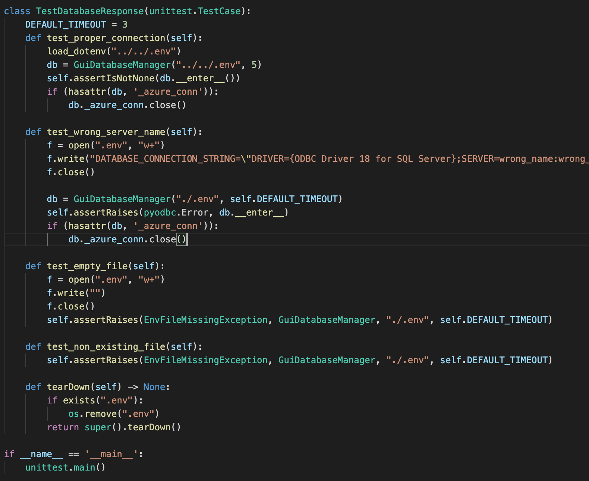
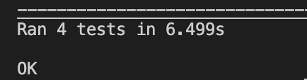

Testing Strategy
A crucial part of our software development process is testing, allowing us to evaluate and verify software performance. We mainly followed a behaviour-driven development which is an agile methodology that allows for continuous improvement of the functionalities of our code based on user feedback. Whenever a component is implemented, we would allow a user to run the code and try using the application. If there is a bug or an aspect that could be implemented better, we would open up an issue on GitHub and work on it as a new milestone. In addition, we have written some unit and integration tests with Python test libraries on code responsible for database connection and also for data analysis. For the front end GUI, we carried out user acceptance testing for feedback on user experience.
Unit and Integration Testing
Unit and Integration testing checks that all code is written correctly, ensuring that it functions in a desirable way. Since it is difficult to simulate hardware devices, we mainly wrote tests on checking front end connection with the GUI and data analysis testing.
Front End Database Connection Testing
Using the Python unittest module, we wrote a series of test for each test case to check database connection. The test cases include:
-
test_proper_connection: This test accesses the current.envfile containing all the keys and passwords used for database connection with our GUI. Since all the information should be correct, theGuiDatabaseManagerobject should return a value when after running the__enter__method. -
test_wrong_server_name: This creates a.envfile with variables such asSERVERset to a name of a non existing server. Since this does not exist, instantiatingGuiDatabaseManagershould cause a time out error that is handled byassertRaises. -
test_empty_file: This creates a.envfile that does not create anything, which should raise anEnvFileMissingExceptionerror. -
test_non_existing_file: In this case, no.envfile is present which should also raise anEnvFileMissingExceptionerror.
To ensure we don’t get banned from accessing Azure SQL database, we always ensured that we close
the connection with db._azure_conn.close() after calling db.__ enter __ where db is an
instance of GuiDatabaseManager object. This is in case if a connection was made, and was never
exited properly, which may use up a lot of resources unnecessarily. Since both errors thrown by
missing file and empty file are time-out errors, we reset the time out period to be 3 seconds to
allow the tests to run more quickly.
The tearDown method is automatically run after every test case, ensuring if there exists a .env file,
it will be removed. This ensures that if an individual test creates a file, this file will not interfere
with other tests.
Here is a screenshot showing our four tests:
And here is a screenshot showing all tests passed:
Data Analysis
For testing of PID algorithm, we designed a simulated test which gave the system random set of numbers
that are fed into the system. A tolerant range was used to see if the PID mechanism allowed the system
to respond, and decreases the difference between sensor value and set point quick enough. Currently,
the tolerant was set to five, so after five rounds of tuning, the feedback output should be within the
range of set point +/- 1.
Furthermore, an test_pid_sudden_change is also designed to see how PID works when a sudden change happens
during a stable period where input values have been consistent. As well as this, we also wrote tests for
normal cases: if it goes back to set value in tolerant ranges, it shall be passed.
Finally, a test_pid_multirange test was written with the desired value set to a random integer between
0 and 100. 50 ranges are been given and all tests passed.
We also tried to test our Actuator and Sensor classes by using pytest mock, but as our program requires listening
to hardware devices for an answer, it would be ineffective to mock an input and mock an output, so this method
used for testing. Instead, we carried out a closed system test over a long time period, and the result showed
that the whole system kept all status stable and fixed.
User Acceptance Testing
For the front end GUI, we decided to use this method of testing to ensure all functionalities are working correctly. Here are the following two simulated users.
Simulated User 1: A middle-aged farmer who has limited knowledge on how to use technology, but would like to know if the current farm condition is optimal or if there is anything adjustments to farm processes needed.
Simulated User 2: A research scientist who has basic technical knowledge and would like to view a cumulative set of data.
Test Cases and Feedback
Test User 1:
| Case ID | Description | Score out of 5 | Feedback |
|---|---|---|---|
| 1 | The GUI is overall easy to use and does not require much technical knowledge to operate. | 3 | It requires pre-existing knowledge on setting up the system and changing configuration files, but the day-to-day operations such as viewing the profile page are easy to use. |
| 2 | The profile pages are informative and data is presented in a clear, simple format. | 4 | Easy to infer information from the page such as current sensor and actuator values and if farm status is optimal. |
| 3 | All components work without bugs detected. | 5 | All components work without bugs detected. |
| 4 | The user manual is useful for understanding the product before using. | 3 | The manual some jargons for the Raspberry Pi set-up and configuration file upload, but the instructions for basic GUI use are clear. |
| 5 | The user experience is satisfactory and the GUI appearance is aesthetic. | 5 | The GUI has a nice appearance with consistent style. |
| Total | 20/25 |
Test User 2:
| Case ID | Description | Score out of 5 | Feedback |
|---|---|---|---|
| 1 | The GUI is overall easy to use and does not require much technical knowledge to operate. | 4 | Some research is required for setting up the Raspberry Pi, but overall, running the GUI and using it is simple. |
| 2 | The profile pages are informative and data is presented in a clear, simple format. | 4 | The GUI is informative, especially the graph feature as it shows a set of data over time. Could improve by having more graphs and allowing adjustments to the number of data shown. |
| 3 | All components work without bugs detected. | 5 | No bugs were found during the testing period, although sometimes the GUI takes a while to open if the internet connection is unstable. |
| 4 | The user manual is useful for understanding the product before using. | 4 | The manual is mostly understandable, but the set-up and configuration file upload section is a little too technical. |
| 5 | The user experience is satisfactory and the GUI appearance is aesthetic. | 3 | The style is consistent and appealing. The corners of the frames can be rounded to look more professional. |
| Total | 20/25 |
User testing conclusion:
Both users find the GUI easy to use and informative, showing the main requirements set by the client have been met. One key feature we can improve upon is making the system set-up and configuration file changing processes simpler for non-technical users to carry out.